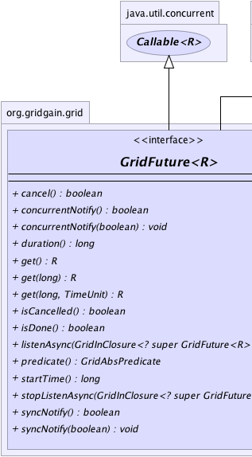
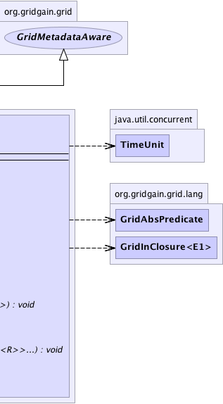

|
|

|

|
|

|

|

|
GridGain™ 3.6.0c
Community Edition |
|||||||||
| PREV CLASS NEXT CLASS | FRAMES NO FRAMES | |||||||||
| SUMMARY: NESTED | FIELD | CONSTR | METHOD | DETAIL: FIELD | CONSTR | METHOD | |||||||||
R - Type of the result for the future.public interface GridFuture<R>
Extension for standard Future interface. It adds simplified exception handling,
functional programming support and ability to listen for future completion via functional
callback.
| Wiki | |
| Forum |
|  |  |
| Method Summary | |
|---|---|
boolean |
cancel()
Cancels this future. |
boolean |
concurrentNotify()
Gets value concurrent listener notification flag. |
void |
concurrentNotify(boolean concurNotify)
Flag to turn on or off concurrent listener notification. |
long |
duration()
Gets duration in milliseconds between start of the future and current time if future is not finished, or between start and finish of this future. |
R |
get()
Synchronously waits for completion of the computation and returns computation result. |
R |
get(long timeout)
Synchronously waits for completion of the computation for up to the timeout specified and returns computation result. |
R |
get(long timeout,
TimeUnit unit)
Synchronously waits for completion of the computation for up to the timeout specified and returns computation result. |
boolean |
isCancelled()
Returns true if this computation was cancelled before it completed normally. |
boolean |
isDone()
Checks if computation is done. |
void |
listenAsync(GridInClosure<? super GridFuture<R>> lsnr)
Registers listener closure to be asynchronously notified whenever future completes. |
GridAbsPredicate |
predicate()
Gets predicate that evaluates to true if this future is done
at the moment of evaluation. |
long |
startTime()
Gets start time for this future. |
void |
stopListenAsync(GridInClosure<? super GridFuture<R>>... lsnr)
Removes given listeners from the future. |
boolean |
syncNotify()
Gets value of synchronous listener notification flag. |
void |
syncNotify(boolean syncNotify)
Flag to turn on or off synchronous listener notification. |
| Methods inherited from interface org.gridgain.grid.GridMetadataAware |
|---|
addMeta, addMetaIfAbsent, addMetaIfAbsent, allMeta, copyMeta, copyMeta, hasMeta, hasMeta, meta, putMetaIfAbsent, putMetaIfAbsent, removeMeta, removeMeta, replaceMeta |
| Methods inherited from interface java.util.concurrent.Callable |
|---|
call |
| Method Detail |
|---|
R get()
throws GridException
GridInterruptedException - Subclass of GridException thrown if the wait was interrupted.
GridFutureCancelledException - Subclass of GridException throws if computation was cancelled.
GridException - If computation failed.
R get(long timeout)
throws GridException
get(long, TimeUnit.MILLISECONDS).
GridInterruptedException - Subclass of GridException thrown if the wait was interrupted.
GridFutureTimeoutException - Subclass of GridException thrown if the wait was timed out.
GridFutureCancelledException - Subclass of GridException throws if computation was cancelled.
GridException - If computation failed.timeout - The maximum time to wait in milliseconds.
R get(long timeout,
TimeUnit unit)
throws GridException
GridInterruptedException - Subclass of GridException thrown if the wait was interrupted.
GridFutureTimeoutException - Subclass of GridException thrown if the wait was timed out.
GridFutureCancelledException - Subclass of GridException throws if computation was cancelled.
GridException - If computation failed.timeout - The maximum time to wait.unit - The time unit of the timeout argument.
boolean cancel()
throws GridException
GridException - If cancellation failed.
True if future was canceled (i.e. was not finished prior to this call).boolean isDone()
True if computation is done, false otherwise.GridAbsPredicate predicate()
true if this future is done
at the moment of evaluation.
true if this future is done
at the moment of evaluation.boolean isCancelled()
true if this computation was cancelled before it completed normally.
True if this computation was cancelled before it completed normally.long startTime()
long duration()
void syncNotify(boolean syncNotify)
true, then
upon future completion the notification may happen in the same thread that created
the future. This becomes especially important when adding listener to a future that
is already done - if this flag is true, then listener will be
immediately notified within the same thread.
Default value is false. To change the default, set
GridSystemProperties.GG_FUT_SYNC_NOTIFICATION system property to true.
syncNotify - Flag to turn on or off synchronous listener notification.boolean syncNotify()
true, then
upon future completion the notification may happen in the same thread that created
the future. This becomes especially important when adding listener to a future that
is already done - if this flag is true, then listener will be
immediately notified within the same thread.
Default value is false. To change the default, set
GridSystemProperties.GG_FUT_SYNC_NOTIFICATION system property to true.
void concurrentNotify(boolean concurNotify)
true,
then all listeners will be notified concurrently by different threads; otherwise,
listeners will be notified one after another within one thread (depending on
GridFuture.syncNotify() flag, these notifications may happen either in the same thread which
started the future, or in a different thread).
Default value is false. To change the default, set
GridSystemProperties.GG_FUT_CONCURRENT_NOTIFICATION system property to true.
concurNotify - Flag to turn on or off concurrent listener notification.boolean concurrentNotify()
true,
then all listeners will be notified concurrently by different threads; otherwise,
listeners will be notified one after another within one thread (depending on
GridFuture.syncNotify() flag, these notifications may happen either in the same thread which
started the future, or in a different thread).
Default value is false. To change the default, set
GridSystemProperties.GG_FUT_CONCURRENT_NOTIFICATION system property to true.
void listenAsync(@Nullable
GridInClosure<? super GridFuture<R>> lsnr)
lsnr - Listener closure to register. If not provided - this method is no-op.
void stopListenAsync(@Nullable
GridInClosure<? super GridFuture<R>>... lsnr)
lsnr - Listeners to remove.
|
GridGain™ 3.6.0c
Community Edition |
|||||||||
| PREV CLASS NEXT CLASS | FRAMES NO FRAMES | |||||||||
| SUMMARY: NESTED | FIELD | CONSTR | METHOD | DETAIL: FIELD | CONSTR | METHOD | |||||||||
|
GridGain - Real Time Big Data
|
|
|
|